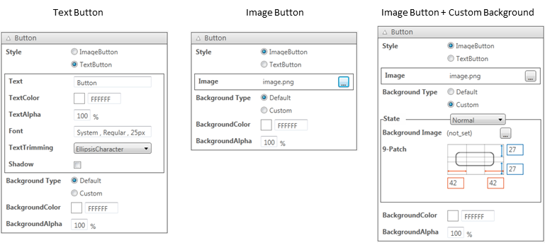

This chapter explains widgets that can be used by the UI Toolkit.
For details on each property, please refer to the UI Toolkit Programming Guide - Widgets
Widgets that can be used as a layout root on which other widgets can be laid out are Scene, Panel, Dialog and ListPanelItem.
This is a widget that controls the UI "screen".
This is a container widget which can store arbitrary UI parts. Not only can it be used as a layout root, it can also be used to group other general widgets.
This is a container widget that displays a modal dialog box. Like the Panel, it can store arbitrary UI parts.
Figure 1 Dialog
This is a widget for laying out contents to display for each item of the ListPanel.
The Widget class is an abstract class that is the base of all widgets (UI parts). Properties of this class can be set to all widgets.

Figure 2 Widget Properties
The Variable Name will be used as the target widget's instance name upon outputting the source code.
The Widget's Position field will display the coordinates of the position selected by the Position Selector.

Figure 3 Position Selector
On the other hand, when entering a number to the Position field, that value will be applied to the target selected with the Position Selector. For example, by selecting the center of a widget with the Position Selector [above Figure (C)] and entering an arbitrary value to the Position field, the widget's central coordinate can be directly specified. For the source code that will ultimately be output, the coordinates of the upper left edge will be automatically calculated and specified as values for the X and Y properties.
When the size of the Scene or Panel changes, the UISystem lays out the widgets in the Scene or Panel according to the AnchorFlag settings. With the AnchorFlag, settings can be made to fix the upper/lower/left/right margin, and to automatically resize the width and height. The UI Composer can be used to visually make settings to the AnchorFlag.

Figure 4 AnchorFlag Customizer
The AnchorFlag Customizer comprises six toggle switches. Behavior when the parent widget of a widget is resized will be displayed as an animation on the Previewer. The animation will only be played back when the mouse cursor is on the AnchorFlag Customizer.
Relationships between the contents set with the UI Composer and the value of the AnchorFlag specified by the output source code are shown below.

Figure 5 Anchor Settings and Results of Automatically Resized Widgets
Use Effect to set the animation when a widget shows up to the screen. For example, the following code is automatically generated when SlideInEffect is set to Button. However, this is enabled only for a child widget of a widget used as the layout root. For a widget other than a child widget, control the widget on the user code side.
// ... partial class MyScene { Button Button_1; Button Button_2; // ... private void InitializeWidget(LayoutOrientation orientation) { // ... // Scene this.RootWidget.AddChildLast(Button_1); this.RootWidget.AddChildLast(Button_2); this.Showing += new EventHandler(onShowing); this.Shown += new EventHandler(onShown); UpdateLanguage(); } // ... private void onShowing(object sender, EventArgs e) { switch (_currentLayoutOrientation) { case LayoutOrientation.Vertical: { Button_2.Visible = false; } break; default: { Button_2.Visible = false; } break; } } private void onShown(object sender, EventArgs e) { switch (_currentLayoutOrientation) { case LayoutOrientation.Vertical: { new SlideInEffect() { Widget = Button_2, MoveDirection = FourWayDirection.Left, } .Start(); } break; default: { new SlideInEffect() { Widget = Button_2, MoveDirection = FourWayDirection.Left, } .Start(); } break; } } // ...
A Label is a component for displaying text. A single line or multiple lines can be displayed.
This is a widget for displaying an image.
The scaling method upon displaying an image can be specified.

Figure 6 Image Scaling Methods
This is a button widget responding to touch operation.
An image or one line of text can be displayed on a button.

Figure 7 Button with Displayed Text and Displayed Images
It is also possible to customize the background image of a Button using the UI Composer.

Figure 8 Buttons with a Customized Background Image
Figure 9 Button Property Window
This is a widget for so-called check boxes and radio buttons; it holds a boolean value.

Figure 10 CheckBox
This is a widget for adjusting numerical values.

Figure 11 Slider
Maximum values, minimum values, initial values, and steps in which values change, can be set.
This widget is used to display the progress level.

Figure 12 ProgressBar
This is a widget with which a text can be displayed and edited.

Figure 13 EditableText
It is possible to display default text when no text is entered, display a mask when a password is entered, and select the input mode for the on-screen keyboard.
This is a widget indicating that some process is in progress.

Figure 14 BusyIndicator
PopupList is a part used for selecting an item from multiple selection options.

Figure 15 PopupList
Choices to display in the PopupList can be set using the UI Composer.
This is a widget to select the date or time.
There are two display styles to select from; one to display just the date, and the other to display just the time. DatePicker and TimePicker widgets will be generated for the respective style.

Figure 16 Date/TimePicker
This is a container widget which can store arbitrary UI parts.
This panel holds a scrollable area. It also has one Panel as a child widget; part of this section is clipped and displayed. Up/down and left/right scrolling is possible by touch operation. The scrollable direction can also be restricted.

Figure 17 ScrollPanel
A Panel class laid out by the user can be added to the ScrollPanel.
This panel enables scrolling by page.

Figure 18 PagePanel
A Panel class laid out by the user can be added to the PagePanel.
This is a list widget that enables scrolling in the vertical direction only. The contents to be displayed for each item can be specified by ListPanelItem. A ListPanelItem laid out by the user can be set.
This is a list widget in which items are placed in a grid, and scrolling is possible vertically and horizontally.
Live Widgets are special PSM widgets with various implemented interactions.
This is a list widget that makes other items to be scrolled with a time delay from the moment a widget item is touched.
This is a panel widget that makes a widget placed on a panel to jump to the foreground of the screen. A child widget can be jumped at an arbitrary timing - such as, when the value of the acceleration sensor changes or when a button is pressed.
This is a panel widget that rotates by a sideways flick. The front and back widgets can be specified.
This is a panel widget that makes panel contents to move with a distorted effect from the touched area as the starting point.
This is a sphere-shaped widget. It can be rotated by a sideways flick. It can also be used as a button since an event handler for taps is also defined for it.
This is a panel that vibrates a child widget according to the acceleration sensor or panel movement.